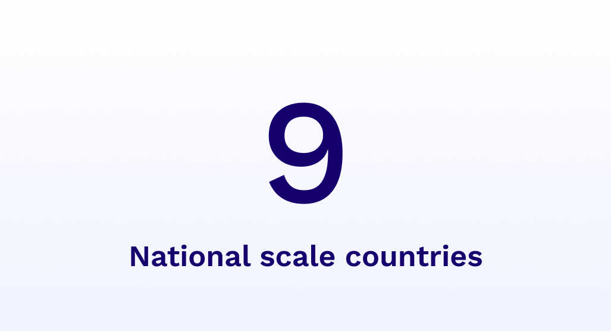

Unlock the Full Potential of Digital with Impact Delivery
Get 10x the value of your investment in digital solutions with Impact Delivery -- a robust, sustainable approach that maximizes impact today and sets the foundation for tomorrow's success.
The Problem with the Current Approach
Escalating global pressures like economic uncertainty, humanitarian crises, and climate change demand more innovative services from social impact organizations and governments, meaning we are expected to do more with less. Digital solutions have the potential to create more value for every dollar invested, but the current approach to leveraging digital technologies for global health and development is falling short. Even when digital efforts are able to achieve short term goals, we often see that they fail to deliver sustained impact.
Digital programs too often focus only on capturing data for administrative reporting, creating a burden on providers and missing the opportunity to enhance service delivery. A review of digital health interventions in Sub-Saharan Africa found that "84% of projects were focused on data mining rather than delivering services."
Digital solutions are generally created with a focus on one specific project or program -- supporting HIV care for example, but this can leave you with dozens of standalone applications for every project, each fading in their value over time, that waste your staff's precious time.
When programs invest in digital solutions, they often utilize time-limited funding with specific demands. But without being able to support the unpredictable emerging needs of the future, the solution's fit for your programs may be short lived, becoming a burden as the program changes.
What is Impact Delivery?
Impact Delivery is the answer to pressures on global health and development to do more with less by creating more value for every dollar invested. It is a forward-thinking approach that leverages technology to maximize the efficiency and effectiveness, and aims to significantly amplify the value of every dollar spent on digital solutions. This approach works within the constraints of project limitations and funding cycles, enabling organizations to address today's problems while strategically preparing for tomorrow's challenges. It's not about surviving the present, but thriving in the future, while delivering critical services to those who need them most.
Rethinking Technology: Three Pillars of Impact Delivery
Digital solutions should collect needed data and also improve and deepen the impact delivered by frontline providers. With CommCare, Dimagi's Impact Delivery platform, you can improve the jobs of your users with robust job aids complete with decision support. This enables seamless referrals for continuity of care, multimedia content for top notch training and automated bi-directional messaging for client communication. You can deliver better services and still capture the data required for administrative reporting.
With CommCare, you can deliver on today's project requirements with a robust foundation. This will allow you to seamlessly rollout new services, add support for additional user types, connect to other systems your organization or partners use, and rapidly release improvements to meet evolving requirements. With an Impact Delivery approach, we intentionally plan to support more impact with no or limited additional cost.
Sustaining impact requires knowing that the future is unknown and being prepared to meet the emerging needs of tomorrow. Dimagi's long-term partnership approach, combined with the building blocks available within the CommCare platform, puts you in a position to meet today's requirements and be ready for tomorrow's challenge. Delivering impactful services in complex ecosystems requires long-term partners, not vendors.
Hear about Impact Delivery on the podcast
"How can we deliver more services to more people with flat or decreasing levels of funding?"
Listen now
Technology is one part of the solution
We can't afford to waste time and resources on ineffective digital transformation initiatives, and solving for technology alone is not enough. Impact Delivery requires a coordinated approach across your people, processes and technology.
A dedicated team of individuals who possess not only the capacity but also the expertise to effectively implement and sustain your approach for the long-term.
A strong vision backed up by robust strategic planning, adequate investment and enabling processes to support your approach.
A stack built on a strong, long-term platform to allow for continuously expanding value across existing and emerging needs.
Get the Impact Delivery Playbook
Learn how to apply Impact Delivery to your programs and maximize the value of your investment in digital solutions.
Impact Delivery, answered
How much does it cost to do Impact Delivery?
Impact delivery is an approach, not a specific technology, and Dimagi's portfolio of products and services are designed to allow you to follow this approach. CommCare is our Impact Delivery platform for organizations with frontline staff and you can find pricing information here. SureAdhere is our virtual care platform for person-centered remote treatment support and you can learn more here. Our Solutions Delivery team is your partner for building and scaling custom technology to support today's use case and tomorrow's. Learn more here.
Additionally, it's crucial to remember that the goal is to create more value from the same investment, so the focus should be on the long-term return on investment (ROI) rather than just the initial outlay. Talk to us to learn more!
What is Impact Delivery?
Impact Delivery is the answer to pressures on global health and development to do more with less, by creating more value for your digital investment. It is an innovative approach that leverages technology to maximize the efficiency and effectiveness of social impact organizations. It focuses on enhancing service quality, increasing the quantity of impactful services within existing budgets, and planning for long-term success. By adopting this approach, you can move from simply digitizing programs to creating powerful, lasting change that grows in value over time. We do this by leveraging existing funding and project-based constraints.
What are the three key pillars of Impact Delivery?
The three pillars of Impact Delivery are Better Impact, More Impact, and Sustained Impact. Better Impact focuses on enhancing the quality of services delivered, while More Impact aims to increase the quantity of impactful services with the existing investments, and Sustained Impact focuses on setting up for long-term success.
How does Impact Delivery differ from traditional digitisation efforts?
Unlike traditional models, Impact Delivery isn't confined to the constraints of project-based funding cycles. It goes beyond meeting present requirements and lays a foundation for future expansion. It's about creating more value from the same investment, preparing for future needs, and achieving sustainable growth.
How can Impact Delivery help in dealing with the challenges posed by funding constraints?
Impact Delivery focuses on maximizing value from existing resources, and instead of just meeting the current project needs, it utilizes project-based funding to build a foundation for future needs. This approach contributes to a stronger foundation that creates sustained value over time, even during funding dry spells.
Can Impact Delivery be applied to any sector?
Yes, Impact Delivery is an approach for social impact organizations and governments, and can be applied across sectors including health, agriculture, social services, and more. See how CommCare can be used across various sectors.
How does Impact Delivery support frontline workers?
Impact Delivery supports frontline workers by leveraging digital technology to improve their job aids and support systems, enabling them to deliver better services to their clients. It also recognizes the importance of their wellbeing, advocating for tools like WellMe, a resilience and wellbeing application for frontline workers.
How does Impact Delivery contribute to better service delivery?
While data collection and analysis are crucial, Impact Delivery shifts the focus from primarily collecting data for administrative purposes, to delivering impactful services. The same investment made in digitizing data can be used to deliver more impactful services while still gathering necessary data.
What role does ecosystem thinking play in Impact Delivery?
Ecosystem thinking is vital in Impact Delivery as it goes beyond the scope of single projects, and instead, encourages designing digital programs as part of a larger ecosystem from the beginning, rather than treating them as one-off projects. This approach facilitates cross-project design, allowing for the delivery of more integrated services. Dimagi's products are designed for interoperability and smooth data exchange to support connecting tools across workflows. Learn more about CommCare's integrations here.
How does Impact Delivery prepare organizations for the future?
Impact Delivery encourages a forward-looking approach. It is about addressing today's needs in such a way that the organization is also prepared to tackle the emerging needs of tomorrow. You can create a compelling organizational vision and processes to support it. By leveraging robust and long-term technology platforms, and investing in the human capital to bring it to life over time, organizations can build the capabilities and foundations they need to face future challenges.
Keep exploring

Learn how Dimagi got its start, and the incredible team building digital solutions that help deliver critical services to underserved communities.
Read more →
Build secure, customizable apps, enabling your frontline teams to collect actionable data and amplify your organization's impact.
Read more →
Listen to meaningful conversations on how to build digital solutions for leading NGOs that are immensely impactful and also achieve high-growth.
Read more →